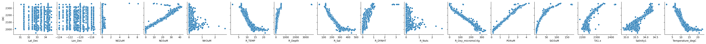

![]()
# Load basic libraries
import pandas as pd
import seaborn as sns
import numpy as np
import matplotlib.pyplot as plt
import statistics as stats
import time
# XGB libraries
from sklearn.model_selection import train_test_split,RandomizedSearchCV, cross_val_score, KFold
import xgboost as xgb
from hyperopt import hp, fmin, tpe, Trials, STATUS_OK
from xgboost import XGBRegressor
from sklearn.metrics import mean_squared_error
from scipy.stats import uniform, randint
from sklearn.preprocessing import StandardScalerMachine Learning Models
Are growing in prevalence and efficacy in environmental science. What began in 1949 as an attempt to write a computer program that could play checkers [1] has grown into one of the fastest developing fields today. Machine learning is used to across multiple disciplines—from image recognition models designed to improve the speed of medical diagnoses [2] to the program that filters your spam from your normal inbox [3]—machine learning’s reach has spread far and wide. The study of our natural world and its processes is no exception.
Machine learning has allowed major advances in the environmental field as well. As data collection techniques only become more refined, frequent, and numerous, we need processing techniques that can match the scale of this data.
As part of a final project in Dr. Matteo Robbin’s Machine Learning in Environmental Science, we were tasked with optimizing a machine learning model that would predict dissolved inorganic carbon content (DIC) in a sample of seawater based on a number of other associated characteristics. This was held as part of a kaggle competiton where our evaluation metric was root mean squared error (rmse). The winner was determined based on which model had the smallest rmse on the private leaderboard. Overall, this assesses how accurate each model is at predicting DIC when generalizing to unseen data.
I will walk through my winning model for this competition: an extreme gradient boosted model (XGB) with bayesian hyperoptimization of parameters.
The Model Breakdown
eXtreme Gradient Boosting
Let’s go word by word through an extreme gradient boosted model and explain each piece.
Boosted: Boosting is an ensemble method in which multiple weak decision trees are trained sequentially. In simpler terms, you train many “short” decision trees on top of each other and you use the residual error from the previous tree to train the following tree. This allows the model to iteratively optimize performance without a tendency to overfit.
Gradient: Gradient refers to the idea of gradient descent, which is the optimization technique used to minimize the loss function. This starts to get into the math weeds, so I’ll link some resources for those who’d like more detail [4] [5]. But at it’s most conceptual, let’s imagine our parameter space as standing on top of a hill. If we look down, there are numerous different slopes and valleys that mark the terrain between the peak and the bottom of the hill. This “terrain variation” can be thought of as the unique parameter space of our model. Now, imagine I were to drop 100 ping pong balls from the top of this hill and I want to know which ball reached the bottom the fastest. The fastest ping pong boll can be thought of as akin to the gradient of our loss function. That is, gradient descent finds the direction of steepest increase to minimize the loss function.
Extreme: Now that we have a conceptual understanding of gradient descent, there are many different ways you can set up your how your model finds the most optimum gradient. The term “extreme” comes from the popular xgboost library that is designed to be especially efficient and flexible. There are other types of gradient descent, like batch gradient descent or stochastic gradient descent [6], but XGB is a very common method due to its high performance, built-in regularization, and parallel computing capabilities.
hyperopt: Bayesian Hyperoptimization
Now that we have our model itself established, let’s talk about how I decided to select parameters for the model with hyperopt. hyperopt is a python library that uses bayesian optimization to find the best parameters. It has three main parts: an objective function, a domain space, and a search algorithm [7].
- Bayesian optimization: This is another area that gets into the weeds [8], but it can be thought of as a probabilistic, model-based technique to minimize a function. It’s quicker than a random search of parameters because it uses the posterior distribution to establish which parameter spaces are most worth exploring. In this way, the future parameter combinations are informed by the previous ones.
- Objective function: This is the function we want our bayesian model to minimize. This function will take our input domain space and output the validation metric (in our case, RMSE). The objective function for this model is the XGB model discussed above. We want to minimize our error given that exact model construction, so naturally, we optimize our hyperparameters based on that model.
- Domain space: The set of hyperparameters and their input values over which we want to search.
- Optimization algorithm: The optimization algorithm used in this model is Tree of Parzen Estimators (TPE). This is where the Bayesian optimization discussed above actually happens.
At the end of the hyperopt process, we have a set of parameters that returns the smallest RMSE. Then, we can train our model on the best parameters.
Data
The data used in this model comes courtesy of Dr. Erin Satterthwaite at the California Cooperative Oceanic Fisheries Investigations(CalCOFI)
Metadata
Lat_Dec: Observed Latitude in decimal degreesLon_Dec: Observed Longitude in decimal degreesNO2uM: Micromoles Nitrite per liter of seawaterNO3uM: Micromoles Nitrate per liter of seawaterNH3uM: Micromoles Ammonia per liter of seawaterR_TEMP: Reported (Potential) Temperature in degrees CelsiusR_Depth: Reported Depth (from pressure) in metersR_Sal: Reported Salinity (from Specific Volume Anomoly, M³/Kg)R_DYNHT: Reported Dynamic Height in units of dynamic meters (work per unit mass)R_Nuts: Reported Ammonium concentrationR_Oxy_micromol.Kg: Reported Oxygen micromoles/kilogramPO4uM: Micromoles Phosphate per liter of seawaterSiO3uM: Micromoles Silicate per liter of seawaterTA1.x: Total Alkalinity micromoles per kilogram solutionSalinity1: Salinity (Practical Salinity Scale 1978)Temperature_degC: Water temperature in degrees CelsiusDIC: Dissolved Inorganic Carbon micromoles per kilogram solution
The Coding Breakdown
Import Data and Explore
# Import data
train_df = pd.read_csv("~/MEDS/website/haylee360.github.io/posts/2025-03-30-kaggle/data/train.csv")
test_df = pd.read_csv("~/MEDS/website/haylee360.github.io/posts/2025-03-30-kaggle/data/test.csv")
# Fix column name error
test_df = test_df.rename(columns={'TA1':'TA1.x'})
# Remove NA column from training data
train_df = train_df.drop(columns='Unnamed: 12')# Get a feel for feature summary stats
train_df.describe()| id | Lat_Dec | Lon_Dec | NO2uM | NO3uM | NH3uM | R_TEMP | R_Depth | R_Sal | R_DYNHT | R_Nuts | R_Oxy_micromol.Kg | PO4uM | SiO3uM | TA1.x | Salinity1 | Temperature_degC | DIC | |
|---|---|---|---|---|---|---|---|---|---|---|---|---|---|---|---|---|---|---|
| count | 1454.000000 | 1454.000000 | 1454.000000 | 1454.000000 | 1454.000000 | 1454.000000 | 1454.000000 | 1454.000000 | 1454.000000 | 1454.000000 | 1454.000000 | 1454.000000 | 1454.000000 | 1454.000000 | 1454.000000 | 1454.000000 | 1454.000000 | 1454.000000 |
| mean | 727.500000 | 33.271315 | -120.216359 | 0.062252 | 18.885812 | 0.085062 | 10.882772 | 193.451857 | 224.527854 | 0.374726 | 0.085062 | 146.507682 | 1.644869 | 29.171437 | 2256.054409 | 33.764094 | 10.901307 | 2150.468820 |
| std | 419.877958 | 0.891261 | 1.719873 | 0.284517 | 14.414059 | 0.190922 | 3.702193 | 347.486135 | 88.427864 | 0.365226 | 0.190922 | 92.421033 | 1.024450 | 28.628682 | 35.215125 | 0.398409 | 3.684964 | 113.163645 |
| min | 1.000000 | 30.417500 | -124.000670 | 0.000000 | 0.000000 | 0.000000 | 1.250000 | 1.000000 | 44.900000 | 0.003000 | 0.000000 | 0.000000 | 0.170000 | 0.000000 | 2181.570000 | 32.840000 | 1.520000 | 1948.850000 |
| 25% | 364.250000 | 32.654580 | -121.844853 | 0.000000 | 1.877500 | 0.000000 | 8.185000 | 30.000000 | 149.475000 | 0.107000 | 0.000000 | 59.170572 | 0.490000 | 3.585000 | 2230.032500 | 33.417000 | 8.215000 | 2025.818652 |
| 50% | 727.500000 | 33.420670 | -120.025080 | 0.014000 | 22.600000 | 0.010000 | 9.900000 | 101.000000 | 202.000000 | 0.293500 | 0.010000 | 136.267250 | 1.820000 | 24.150000 | 2244.020000 | 33.746800 | 9.910000 | 2166.630000 |
| 75% | 1090.750000 | 34.150520 | -118.630000 | 0.050000 | 31.500000 | 0.090000 | 13.667500 | 252.000000 | 299.075000 | 0.577750 | 0.090000 | 244.636050 | 2.560000 | 45.675000 | 2279.175000 | 34.149450 | 13.667500 | 2252.657500 |
| max | 1454.000000 | 34.663330 | -117.308600 | 8.190000 | 42.000000 | 2.750000 | 22.750000 | 3595.000000 | 485.900000 | 3.226000 | 2.750000 | 332.347700 | 4.280000 | 175.200000 | 2433.710000 | 34.676000 | 22.750000 | 2367.800000 |
# Check NAs
train_df.isna().sum()id 0
Lat_Dec 0
Lon_Dec 0
NO2uM 0
NO3uM 0
NH3uM 0
R_TEMP 0
R_Depth 0
R_Sal 0
R_DYNHT 0
R_Nuts 0
R_Oxy_micromol.Kg 0
PO4uM 0
SiO3uM 0
TA1.x 0
Salinity1 0
Temperature_degC 0
DIC 0
dtype: int64# Visualize feature relationships
sns.pairplot(train_df, y_vars=['DIC'], x_vars= train_df.columns[1:-1], diag_kind='kde')
Model Selection: XGB with Hyperoptimization
The relationships look mostly linear, but we’re working with a lot of features. I figured gradient boosting would be a good approach.
# Assign features
X = train_df.drop(columns=['id', 'DIC'], axis=1)
y = train_df['DIC']
X_test = test_df.drop(columns=['id'], axis=1)
# Scale the data
scaler = StandardScaler()
X_scaled = pd.DataFrame(scaler.fit_transform(X), columns=X.columns)
# For predictions later on...
X_test_scaled = pd.DataFrame(scaler.transform(X_test), columns=X_test.columns)Define Objective Function
# Set up kfold cross validation
kf = KFold(n_splits=5, shuffle=True, random_state=808)
# Define objective function to minimize
def objective(params):
model = XGBRegressor(
n_estimators=int(params["n_estimators"]),
learning_rate=params["learning_rate"],
max_depth=int(params["max_depth"]),
min_child_weight=params["min_child_weight"],
subsample=params["subsample"],
colsample_bytree=params["colsample_bytree"],
gamma=params["gamma"],
reg_alpha=params["reg_alpha"],
reg_lambda=params["reg_lambda"],
random_state=808
)
# Perform cross-validation
scores = -cross_val_score(model, X_scaled, y, cv=kf, scoring='neg_root_mean_squared_error', n_jobs=-1)
# Average RMSE across folds
rmse = np.mean(scores)
return {'loss': rmse, 'status': STATUS_OK}Create Domain space
# Create hyperparameter space
space = {
"n_estimators": hp.quniform("n_estimators", 100, 1200, 10),
"learning_rate": hp.uniform("learning_rate", 0.005, 0.3),
"max_depth": hp.quniform("max_depth", 3, 20, 1),
"min_child_weight": hp.uniform("min_child_weight", 1, 10),
"subsample": hp.uniform("subsample", 0.5, 1.0),
"colsample_bytree": hp.uniform("colsample_bytree", 0.5, 1.0),
"gamma": hp.uniform("gamma", 0, 10),
"reg_alpha": hp.uniform("reg_alpha", 0, 1),
"reg_lambda": hp.uniform("reg_lambda", 0, 1),
}Run Optimization Algorithm
# Run hyperopt
trials = Trials()
best_params = fmin(
fn=objective,
space=space,
algo=tpe.suggest,
max_evals=200,
trials=trials,
rstate=np.random.default_rng(808)
)Train the Model on the Best Parameters
Now that we’ve optimized all of our relevant parameters, we can train our XGB model. We use **best_params to unpack the best parameters from before and initialize an XGBRegressor model.
# Convert int hyperparameters to fix type error
best_params["n_estimators"] = int(best_params["n_estimators"])
best_params["max_depth"] = int(best_params["max_depth"])
# Initialize best hyperopt model
xgb_hyper = XGBRegressor(**best_params, eval_metric='rmse', random_state=808)
# Fit model
xgb_hyper.fit(X_scaled, y)
# Predict on test data
y_pred_hyper = xgb_hyper.predict(X_test_scaled)# Get feature importance
feat_imp_hyper = pd.DataFrame({'Feature': X_scaled.columns, 'Importance': xgb_hyper.feature_importances_})
# Sort by importance
feat_imp_hyper = feat_imp_hyper.sort_values(by="Importance", ascending=False)
feat_imp_hyper| Feature | Importance |
|---|---|
| SiO3uM | 0.439688 |
| PO4uM | 0.375247 |
| R_Oxy_micromol.Kg | 0.099113 |
| R_Sal | 0.032475 |
| NO3uM | 0.017117 |
| TA1.x | 0.015256 |
| Salinity1 | 0.012926 |
| R_Depth | 0.004667 |
| NO2uM | 0.000781 |
| Temperature_degC | 0.000693 |
| R_TEMP | 0.000607 |
| R_DYNHT | 0.000389 |
| NH3uM | 0.000282 |
| Lat_Dec | 0.000281 |
| Lon_Dec | 0.000257 |
| R_Nuts | 0.000222 |
Now that we’ve generated our predictions on the test data, all we need to do is add those to their associated ID’s in the test_df and export to csv for submission to the competition.
# Add DIC to test dataset
test_df['DIC'] = y_pred_hyper
submission = test_df[['id', 'DIC']]
submission.head()| id | DIC | |
|---|---|---|
| 0 | 1455 | 2170.5910 |
| 1 | 1456 | 2194.9880 |
| 2 | 1457 | 2326.0432 |
| 3 | 1458 | 1991.1729 |
| 4 | 1459 | 2147.3965 |
# Export for submission
submission.to_csv('submission.csv', index=False)And just like that, you can have a competition-winning machine learning model! A very big thanks to Professor Robbins for his guidance in this course, Dr. Satterthwaite for her wonderful guest lecture, and Annie Adams for her assistance all quarter.
References
1.
Wiederhold G, McCarthy J. Arthur samuel: Pioneer in machine learning. IBM Journal of Research and Development. 1992;36: 329–331. doi:10.1147/rd.363.0329
2.
Pinto-Coelho L. How artificial intelligence is shaping medical imaging technology: A survey of innovations and applications. Bioengineering. 2023;10: 1435. doi:10.3390/bioengineering10121435
3.
Dada EG, Bassi JS, Chiroma H, Abdulhamid SM, Adetunmbi AO, Ajibuwa OE. Machine learning for email spam filtering: Review, approaches and open research problems. Heliyon. 2019;5: e01802. doi:https://doi.org/10.1016/j.heliyon.2019.e01802
4.
Kwiatkowski R. Gradient descent algorithm - a deep dive. Medium. TDS Archive; 2023. Available: https://medium.com/data-science/gradient-descent-algorithm-a-deep-dive-cf04e8115f21
5.
Google; 2024. Available: https://developers.google.com/machine-learning/crash-course/linear-regression/gradient-descent
6.
IBM. What is gradient descent? 2025. Available: https://www.ibm.com/think/topics/gradient-descent
7.
Banerjee P. Bayesian optimization using hyperopt. Kaggle; 2020. Available: https://www.kaggle.com/code/prashant111/bayesian-optimization-using-hyperopt
8.
Nogueira F. Bayesian Optimization: Open source constrained global optimization tool for Python. 2014--. Available: https://github.com/bayesian-optimization/BayesianOptimization
Citation
BibTeX citation:
@online{oyler2025,
author = {Oyler, Haylee},
title = {So {You} {Want} to {Win} a {Kaggle} {Competition?}},
date = {2025-03-30},
url = {https://haylee360.github.io/posts/2025-03-30-kaggle/},
langid = {en}
}
For attribution, please cite this work as:
Oyler H. So You Want to Win a Kaggle
Competition? 30 Mar 2025. Available: https://haylee360.github.io/posts/2025-03-30-kaggle/